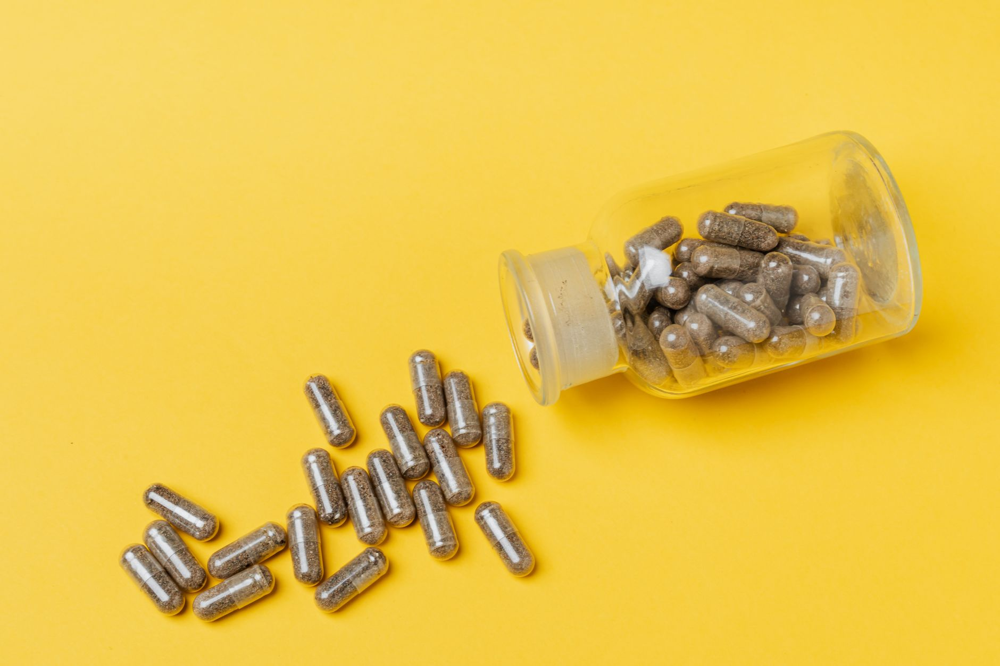

Inicio/Artículos/Suplementos · Mitos virales
Berberina: la "ozempic natural" que arrasa en TikTok, según la ciencia
7 min de lectura · Actualizado 4 de septiembre de 2026 · Por Miguel Lopez

"Ozempic natural" es el apodo que le puso TikTok a la berberina, un suplemento vegetal que promete efectos parecidos a los de los fármacos GLP-1 sin receta ni pinchazos. Este artículo explica qué es realmente la berberina, de dónde sale esa comparación, y qué dice la evidencia científica sobre sus efectos (sin indicaciones de dosis ni instrucciones de uso).
Qué es la berberina
La berberina es un alcaloide vegetal extraído de plantas como el agracejo (Berberis vulgaris). Se usa desde hace siglos en la medicina tradicional china y ayurvédica, y desde hace décadas es objeto de estudio científico, principalmente por sus efectos sobre el metabolismo de la glucosa.
Por qué se compara con Ozempic (y por qué esa comparación cojea)
Ozempic y los fármacos similares son agonistas del receptor GLP-1: reducen el apetito y ralentizan el vaciado gástrico, con una potencia comprobada en ensayos clínicos grandes. La berberina funciona por un mecanismo distinto: activa principalmente la enzima AMPK, relacionada con cómo las células usan la energía. Su efecto sobre el peso corporal es mucho más modesto, del orden de unos pocos kilos, no de las pérdidas de peso de doble dígito porcentual que se observan con los agonistas de GLP-1.
Llamar a la berberina "ozempic natural" exagera bastante su potencia real: son moléculas con mecanismos y magnitudes de efecto completamente distintos.
Qué dice la evidencia sobre glucosa y colesterol
La berberina tiene respaldo científico en varios puntos.
Sobre la glucosa en sangre, varios ensayos clínicos y metaanálisis muestran reducciones modestas pero medibles de la glucosa en ayunas y de la hemoglobina glicosilada (HbA1c) en personas con resistencia a la insulina o diabetes tipo 2. Algunos estudios encuentran efectos comparables a los de la metformina, aunque los estudios de berberina suelen ser más pequeños y de menor calidad metodológica que los grandes ensayos que respaldan a los fármacos aprobados.
La evidencia es más consistente en colesterol y triglicéridos: varios ensayos muestran reducción de colesterol LDL y triglicéridos.
En el peso corporal, el efecto es discreto, del orden de unos pocos kilos en varios meses, muy por debajo de lo que producen los agonistas de GLP-1.
Efectos secundarios y potencial de interacción
El efecto adverso más frecuente es digestivo: diarrea, dolor abdominal, estreñimiento o gases, sobre todo al empezar a tomarla.
La berberina se metaboliza por una vía hepática (CYP3A4) que comparte con numerosos medicamentos, lo que puede generar interacciones relevantes, incluyendo anticoagulantes, algunos antidiabéticos y ciertos inmunosupresores. Por eso cualquier decisión sobre tomarla o no, y en qué condiciones, es una conversación con un profesional de la salud que conozca el resto de la medicación de la persona, no algo para resolver por cuenta propia a partir de contenido de redes sociales.
Nuestra conclusión
La berberina no es un invento de TikTok ni tampoco un "ozempic natural": es un compuesto vegetal con décadas de estudios detrás y un efecto real, aunque modesto, sobre la glucosa y el colesterol. Compararla en potencia con un fármaco GLP-1 es incorrecto: actúan por vías distintas y con magnitudes de efecto muy diferentes. Dado su potencial de interacción con medicación habitual, cualquier evaluación de si tiene sentido incorporarla le corresponde a un profesional de salud, no a este artículo.
- ¿Qué es la berberina?
- Un alcaloide vegetal extraído de plantas como el agracejo, usado desde hace siglos en medicina tradicional y estudiado científicamente desde hace décadas por sus efectos sobre el metabolismo de la glucosa.
- ¿Por qué se la llama "ozempic natural"?
- Porque ambos se asocian a mejoras en glucosa y, en menor medida, en peso. Pero actúan por mecanismos distintos (AMPK versus receptor GLP-1) y con magnitudes de efecto muy distintas: la pérdida de peso con berberina es del orden de pocos kilos, muy lejos de la de los agonistas de GLP-1.
- ¿La berberina sirve para adelgazar?
- Su efecto sobre el peso es modesto, del orden de unos pocos kilos en varios meses, y muy inferior al que producen los fármacos GLP-1. No es comparable como estrategia de pérdida de peso.
- ¿Qué diferencia hay entre la berberina y la metformina?
- Ambas actúan sobre el metabolismo de la glucosa, y algunos estudios pequeños encuentran efectos comparables en HbA1c. Pero la metformina cuenta con décadas de ensayos clínicos a gran escala, mientras que la evidencia sobre berberina proviene de estudios más pequeños y de menor calidad metodológica.
- ¿La berberina tiene efectos secundarios frecuentes?
- El más habitual es digestivo: diarrea, dolor abdominal, estreñimiento o gases, sobre todo al comenzar a tomarla.
- ¿Interactúa la berberina con otros medicamentos?
- Sí, tiene potencial de interacción relevante porque se metaboliza por una vía hepática (CYP3A4) compartida con muchos fármacos, incluyendo anticoagulantes y algunos antidiabéticos. Es un punto que solo puede evaluar un profesional de salud que conozca el cuadro completo de la persona.
Preguntas frecuentes
Fuentes
Enlaces a la fuente original, para que puedas comprobarlo por tu cuenta.
Miguel Lopez
Periodista independiente, no profesional sanitario. Escribe sobre tendencias de salud y fitness citando siempre las fuentes primarias, para que puedas comprobarlo por tu cuenta. Más sobre el sitio.